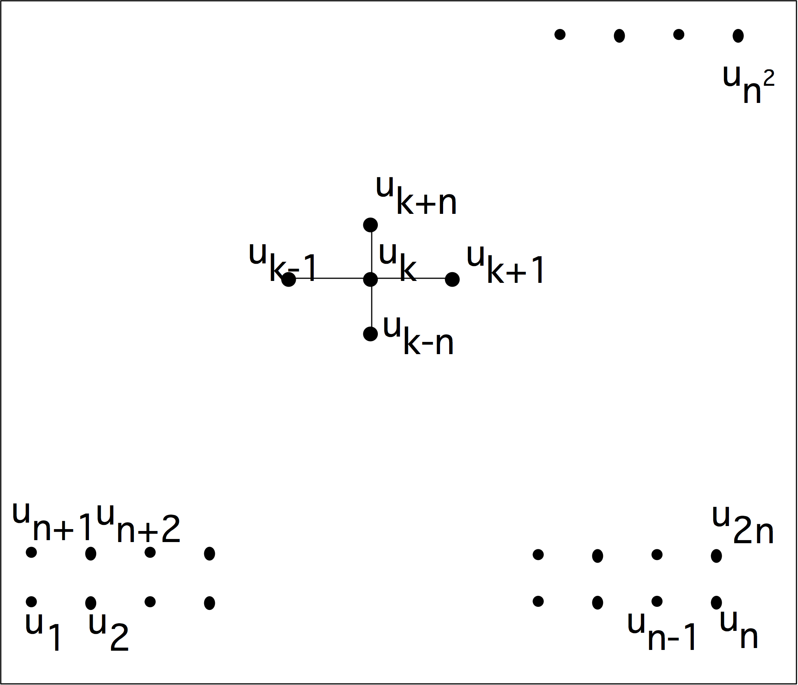
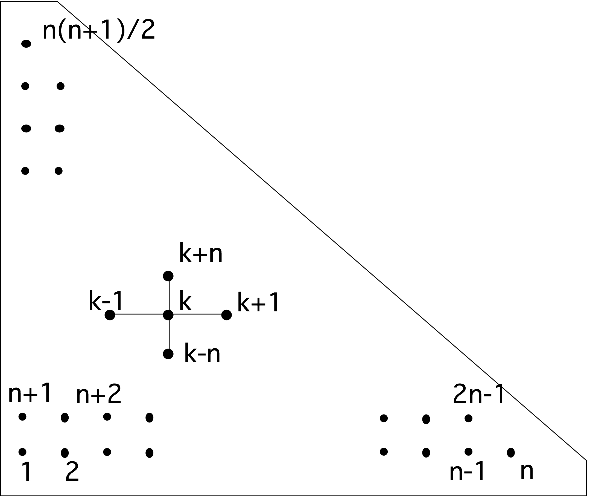
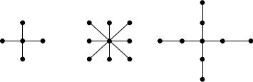
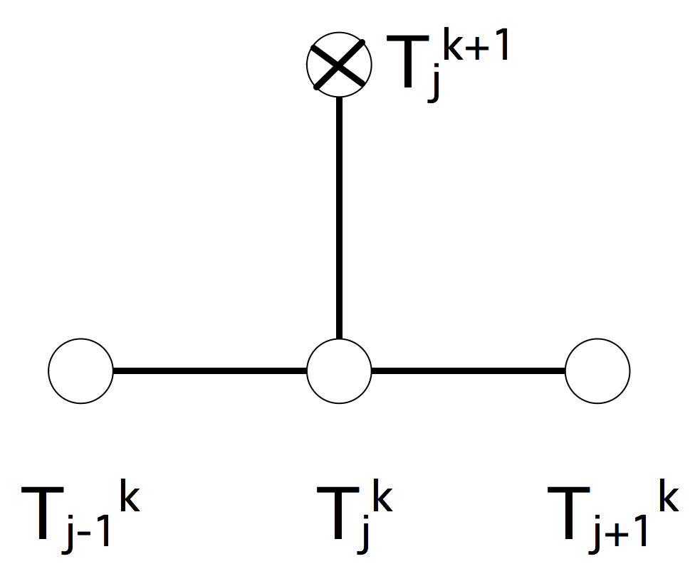
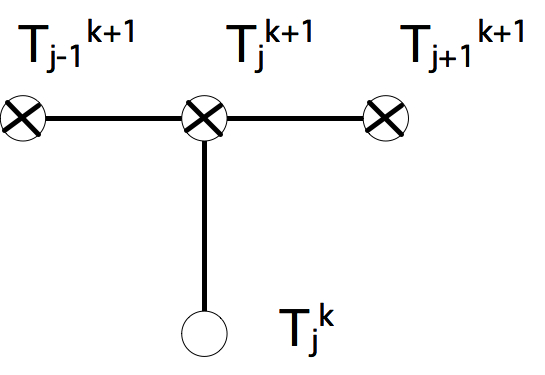

In this chapter we will look at the numerical solution of ODEs and PDEs . These equations are commonly used in physics to describe phenomena such as the flow of air around an aircraft, or the bending of a bridge under various stresses. While these equations are often fairly simple, getting specific numbers out of them (`how much does this bridge sag if there are a hundred cars on it') is more complicated, often taking large computers to produce the desired results. Here we will describe the techniques that turn ODEs and PDEs into computable problems.
First of all, we will look at IVPs , which describes processes that develop in time. Here we consider ODEs : scalar functions that are only depend on time. The name derives from the fact that typically the function is specified at an initial time point.
Next, we will look at BVPs , describing processes in space. In realistic situations, this will concern multiple space variables, so we have a PDE . The name BVP is explained by the fact that the solution is specified on the boundary of the domain of definition.
Finally, we will consider the `heat equation', an IBVP which has aspects of both IVPs and BVPs : it describes heat spreading through a physical object such as a rod. The initial value describes the initial temperature, and the boundary values give prescribed temperatures at the ends of the rod.
Our aim in this chapter is to show the origins of an important class of computational problems. Therefore we will not go into theoretical matters of existence, uniqueness, or conditioning of solutions. For this, see~ [Heath:scicomp] or any book that is specifically dedicated to ODEs or PDEs . For ease of analysis we will also assume that all functions involved have sufficiently many higher derivatives, and that each derivative is sufficiently smooth.
crumb trail: > odepde > Initial value problems
Many physical phenomena change over time, and typically the laws of physics give a description of the change, rather than of the quantity of interest itself. For instance, Newton's second law
F=ma \label{eq:f=ma} \end{equation}is a statement about the change in position of a point mass: expressed as \[ a(t)=\frac{d^2}{dt^2}x(t)=F/m \] it states that acceleration depends linearly on the force exerted on the mass. A closed form description $x(t)=…$ for the location of the mass can sometimes be derived analytically, but in many cases some form of approximation or numerical computation is needed. This is also known as `numerical integration'.
Newton's second law \eqref{eq:f=ma} is an ODE since it describes a function of one variable, time. It is an IVP since it describes the development in time, starting with some initial conditions. As an ODE , it is `of second order' since it involves a second derivative, We can reduce this to first order, involving only first derivatives, if we allow vector quantities. We introduce a two-component vector $u$ that combines the location $x$ and velocity $x'$, where we use the prime symbol to indicate differentiation in case of functions of a single variable: \[ u(t)=(x(t),x'(t))^t, \] Newton's equation expressed in $u$ then becomes: \[ u'=Au+B,\qquad A= \begin{pmatrix} 0&1\\ 0& 0 \end{pmatrix} ,\quad B= \begin{pmatrix} 0\\ F/a \end{pmatrix} \]
For simplicity, in this course we will only consider scalar equations; our reference equation is then
u'(t)=f(t,u(t)),\qquad u(0)=u\_0,\qquad t>0. \label{eq:ode-nonauton} \end{equation}Equation \eqref{eq:ode-nonauton} allows for an explicit time dependence of the process, but in general we only consider equations that do not have this explicit dependence, the so-called `autonomous' ODEs of the form
\label{eq:ode} u'(t)=f(u(t)) \end{equation}in which the right hand side does not explicitly depend on $t$.
Non-autonomous ODE s can be transformed to autonomous ones, so this is no limitation. If $u=u(t)$ is a scalar function and $f=f(t,u)$, we define $u_2(t)=t$ and consider the equivalent autonomous system $\big({u'\atop u'_2}\bigr)=\bigl({f(u_2,u)\atop 1}\bigr)$Typically, the initial value in some starting point (often chosen as $t=0$) is given: $u(0)=u_0$ for some value $u_0$, and we are interested in the behavior of $u$ as $t\rightarrow\infty$. As an example, $f(x)=x$ gives the equation $u'(t)=u(t)$. This is a simple model for population growth: the equation states that the rate of growth is equal to the size of the population. The equation \eqref{eq:ode-nonauton} can be solved analytically for some choices of $f$, but we will not consider this. Instead, we only consider the numerical solution and the accuracy of this process.
In a numerical method, we consider discrete size time steps to approximate the solution of the continuous time-dependent process. Since this introduces a certain amount of error, we will analyze the error introduced in each time step, and how this adds up to a global error. In some cases, the need to limit the global error will impose restrictions on the numerical scheme.
crumb trail: > odepde > Initial value problems > Error and stability
Since numerical computation will always involve the inaccuracies stemming from the use of machine arithmetic, we want to avoid the situation where a small perturbation in the initial value leads to large perturbations in the solution. Therefore, we will call a differential equation `stable' if solutions corresponding to different initial values $u_0$ converge to one another as $t\rightarrow\infty$.
A sufficient criterion for stability is: \[ \frac\partial{\partial u}f(u)= \begin{cases} >0&\mbox{unstable}\\ =0&\mbox{neutrally stable}\\ <0&\mbox{stable} \end{cases} \] Proof. If $u^*$ is a zero of $f$, meaning $f(u^*)=0$, then the constant function $u(t)\equiv u^*$ is a solution of $u'=f(u)$, a so-called `equilibrium' solution. We will now consider how small perturbations from the equilibrium behave. Let $u$ be a solution of the PDE, and write $u(t)=u^*+\eta(t)$, then we have \[ \begin{array}{r@{{}={}}l} \eta'&u'=f(u)=f(u^*+\eta)=f(u^*)+\eta f'(u^*)+O(\eta^2)\\ &\eta f'(u^*)+O(\eta^2) \end{array} \] Ignoring the second order terms, this has the solution \[ \eta(t)=e^{f'(x^*)t} \] which means that the perturbation will damp out if $f'(x^*)<0$, and amplify if $f'(x^*)>0$.
We will often refer to the simple example $f(u)=-\lambda u$, with solution $u(t)=u_0e^{-\lambda t}$. This problem is stable if $\lambda>0$.
crumb trail: > odepde > Initial value problems > Finite difference approximation: Euler explicit and implicit methods
In order to solve the problem numerically, we turn the continuous problem into a discrete one by looking at finite time/space steps. Assuming all functions are sufficiently smooth, a straightforward Taylor series expansion (see appendix app:taylor ) gives: \[ u(t+\Delta t)=u(t)+u'(t)\Delta t+u''(t)\frac{\Delta t^2}{2!} + u'''(t)\frac{\Delta t^3}{3!}+\cdots \] This gives for $u'$:
\begin{array}{r@{{}={}}l} u'(t) & \frac{u(t+\Delta t)-u(t)}{\Delta t}+\frac1{\Delta t} \left(u''(t)\frac{\Delta t^2}{2!} + u'''(t)\frac{\Delta t^3}{3!}+\cdots\right)\\ & \frac{u(t+\Delta t)-u(t)}{\Delta t}+\frac1{\Delta t}O(\Delta t^2)\\ & \frac{u(t+\Delta t)-u(t)}{\Delta t}+O(\Delta t) \end{array} \label{eq:forwarddifference} \end{equation}We can approximate the infinite sum of higher derivatives by a single $O(\Delta t^2)$ if all derivatives are bounded; alternatively, you can show that this sum is equal to $\Delta t^2u''(t+\alpha\Delta t)$ with $0<\alpha<1$.
We see that we can approximate a differential operator by a finite difference , with an error that is known in its order of magnitude as a function of the time step.
Substituting this in $u'=f(t,u)$ gives
\[ \frac{u(t+\Delta t)-u(t)}{\Delta t} = f(t,u(t)) +O(\Delta t) \] or
u(t+\Delta t) = u(t) + \Delta t\,f(t,u(t)) +O(\Delta t^2) \label{eq:uplusdt-exact} \end{equation}The preceding two equations are mathematical equalities, and should not be interpreted as a way of computing $u'$ for a given function $u$. Recalling the discussion in section 3.4.4 you can see that such a formula would quickly lead to cancellation for small $\Delta t$. Further discussion of numerical differentiation is outside the scope of this book; please see any standard numerical analysis textbook.
We now use equation \eqref{eq:uplusdt-exact} to derive a numerical scheme: with $t_0=0$, $t_{k+1}=t_k+\Delta t=\cdots=(k+1)\Delta t$, we get a difference equation \[ u_{k+1}=u_k+\Delta t\,f(t_k,u_k) \] for $u_k$ quantities, and we hope that $u_k$ will be a good approximation to $u(t_k)$. This is known as the `Explicit Euler' or `Euler forward' method.
The process of going from a differential equation to a difference equation is often referred to as discretization , since we compute function values only in a discrete set of points. The values computed themselves are still real valued. Another way of phrasing this: the numerical solution is found in the finite dimensional space $\bbR^k$ if we compute $k$ time steps. The solution to the original problem is found in the space of functions $\bbR\rightarrow\bbR$.
In \eqref{eq:forwarddifference} we approximated one operator by another, and in doing so made a truncation error of order $O(\Delta t)$ as $\Delta t\downarrow 0$ (see appendix app:complexity for a more formal introduction to this notation for orders of magnitude.). This does not immediately imply that the difference equation computes a solution that is close to the true solution. For that some more analysis is needed.
We start by analyzing the `local error': if we assume the computed solution is exact at step $k$, that is, $u_k=u(t_k)$, how wrong will we be at step $k+1$? We have \[ \begin{array}{r@{{}={}}l} u(t_{k+1})&u(t_k)+u'(t_k)\Delta t+u''(t_k)\frac{\Delta t^2}{2!}+\cdots\\ &u(t_k)+f(t_k,u(t_k))\Delta t+u''(t_k)\frac{\Delta t^2}{2!}+\cdots\\ \end{array} \] and \[ u_{k+1}=u_k+f(t_ku_k)\Delta t \] So \[ \begin{array}{r@{{}={}}l} L_{k+1}&u_{k+1}-u(t_{k+1})=u_k-u(t_k)+f(t_k,u_k)-f(t_k,u(t_k)) -u''(t_k)\frac{\Delta t^2}{2!}+\cdots\\ &-u''(t_k)\frac{\Delta t^2}{2!}+\cdots \end{array} \] This shows that in each step we make an error of $O(\Delta t^2)$. If we assume that these errors can be added, we find a global error of \[ E_k\approx\Sigma_k L_k=k\Delta t\frac{\Delta t^2}{2!} =O(\Delta t) \] Since the global error is of first order in $\Delta t$, we call this a `first order method'. Note that this error, which measures the distance between the true and computed solutions, is of the same order $O(\Delta t)$ as the truncation error, which is the error in approximating the operator.
crumb trail: > odepde > Initial value problems > Finite difference approximation: Euler explicit and implicit methods > Stability of the Euler explicit method
Consider the IVP $u'=f(t,u)$ for $t\geq0$, where $f(t,u)=-\lambda u$ and an initial value $u(0)=u_0$ is given. This has an exact solution of $u(t)=u_0e^{-\lambda t}$. From the above discussion, we conclude that this problem is stable, meaning that small perturbations in the solution ultimately damp out, if $\lambda>0$. We will now investigate the question of whether the numerical solution behaves the same way as the exact solution, that is, whether numerical solutions also converge to zero.
The Euler forward, or explicit Euler, scheme for this problem is \[ u_{k+1}=u_k-\Delta t \lambda u_k=(1-\lambda \Delta t)u_k \Rightarrow u_k=(1-\lambda\Delta t)^ku_0. \] For stability, we require that $u_k\rightarrow 0$ as $k\rightarrow\infty$. This is equivalent to \begin{eqnarray*} u_k\downarrow 0 &\Leftrightarrow&|1-\lambda \Delta t|<1\\ &\Leftrightarrow&-1<1-\lambda\Delta t<1\\ &\Leftrightarrow&-2<-\lambda\Delta t<0\\ &\Leftrightarrow&0<\lambda\Delta t<2\\ &\Leftrightarrow&\Delta t<2/\lambda \end{eqnarray*} We see that the stability of the numerical solution scheme depends on the value of $\Delta t$: the scheme is only stable if $\Delta t$ is small enough. For this reason, we call the explicit Euler method conditionally stable . Note that the stability of the differential equation and the stability of the numerical scheme are two different questions. The continuous problem is stable if $\lambda>0$; the numerical problem has an additional condition that depends on the discretization scheme used.
Note that the stability analysis we just performed was specific to the differential equation $u'=-\lambda u$. If you are dealing with a different IVP you have to perform a separate analysis. However, you will find that explicit methods typically give conditional stability.
crumb trail: > odepde > Initial value problems > Finite difference approximation: Euler explicit and implicit methods > The Euler implicit method
The explicit method you just saw was easy to compute, but the conditional stability is a potential problem. For instance, it could imply that the number of time steps would be a limiting factor. There is an alternative to the explicit method that does not suffer from the same objection.
Instead of expanding $u(t+\Delta t)$, consider the following expansion of $u(t-\Delta t)$: \[ u(t-\Delta t)=u(t)-u'(t)\Delta t+u''(t)\frac{\Delta t^2}{2!}+\cdots \] which implies \[ u'(t)=\frac{u(t)-u(t-\Delta t)}{\Delta t}+u''(t)\Delta t/2+\cdots \] As before, we take the equation $u'(t)=f(t,u(t))$ and approximate $u'(t)$ by a difference formula: \[ \frac{u(t)-u(t-\Delta t)}{\Delta t}=f(t,u(t)) +O(\Delta t) \Rightarrow u(t)=u(t-\Delta t)+\Delta t f(t,u(t))+O(\Delta t^2) \] Again we define fixed points $t_k=kt$, and we define a numerical scheme: \[ u_{k+1}=u_k+\Delta tf(t_{k+1},u_{k+1}) \] where $u_k$ is an approximation of $u(t_k)$.
An important difference with the explicit scheme is that $u_{k+1}$ now also appears on the right hand side of the equation. That is, the computation of $u_{k+1}$ is now implicit. For example, let $f(t,u)=-u^3$, then $u_{k+1}=u_k-\Delta t u_{k+1}^3$. In other words, $u_{k+1}$ is the solution for $x$ of the equation $\Delta t x^3+x=u_k$. This is a nonlinear equation, which typically can be solved using the Newton method.
crumb trail: > odepde > Initial value problems > Finite difference approximation: Euler explicit and implicit methods > Stability of the implicit Euler method
Let us take another look at the example $f(t,u)=-\lambda u$. Formulating the implicit method gives \[ u_{k+1}=u_k-\lambda \Delta t u_{k+1} \Leftrightarrow (1+\lambda\Delta t)u_{k+1}=u_k \] so \[ u_{k+1}=\left (\frac1{1+\lambda\Delta t}\right)u_k \Rightarrow u_k=\left (\frac1{1+\lambda\Delta t}\right)^ku_0. \] If $\lambda>0$, which is the condition for a stable equation, we find that $u_k\rightarrow0$ for all values of $\lambda$ and $\Delta t$. This method is called unconditionally stable . One advantage of an implicit method over an explicit one is clearly the stability: it is possible to take larger time steps without worrying about unphysical behavior. Of course, large time steps can make convergence to the steady state (see Appendix 15.4 ) slower, but at least there will be no divergence.
On the other hand, implicit methods are more complicated. As you saw above, they can involve nonlinear systems to be solved in every time step. In cases where $u$ is vector-valued, such as in the heat equation, discussed below, you will see that the implicit method requires the solution of a system of equations.
Analyze the accuracy and computational aspects of the following scheme for the IVP $u'(x)=f(x)$: \[ u_{i+1}=u_i+h(f(x_i)+f(x_{i+1}))/2 \] which corresponds to adding the Euler explicit and implicit schemes together. You do not have to analyze the stability of this scheme.Consider the initial value problem $y'(t)=y(t)(1-y(t))$. Observe that $y\equiv 0$ and $y\equiv 1$ are solutions. These are called `equilibrium solutions'.
crumb trail: > odepde > Boundary value problems
In the previous section you saw initial value problems, which model phenomena that evolve over time. We will now move on to`boundary value problems', which are in general stationary in time, but which describe a phenomenon that is location dependent. Examples would be the shape of a bridge under a load, or the heat distribution in a window pane, as the temperature outside differs from the one inside.
The general form of a (second order, one-dimensional) BVP is \[ \hbox{$u''(x)=f(x,u,u')$ for $x\in[a,b]$ where $u(a)=u_a$, $u(b)=u_b$} \] but here we will only consider the simple form
\hbox{$-u''(x)=f(x)$ for $x\in[0,1]$ with $u(0)=u\_0$, $u(1)=u\_1$.} \label{eq:2nd-order-bvp} \end{equation}in one space dimension, or
\hbox{$-u\_{xx}(\bar x)-u\_{yy}(\bar x)=f(\bar x)$ for $\bar x\in\Omega=[0,1]^2$ with $u(\bar x)=u\_0$ on $\delta\Omega$.} \label{eq:2nd-order-bvp-2D} \end{equation}in two space dimensions. Here, $\delta\Omega$ is the boundary of the domain $\Omega$. Since we prescribe the value of $u$ on the boundary, such a problem is called a BVP .
The boundary conditions can be more general, involving derivatives on the interval end points. Here we only look at Dirichlet boundary conditions % which prescribe function values on the boundary of the domain.
crumb trail: > odepde > Boundary value problems > General PDE theory
There are several types of PDE , each with distinct mathematical properties. The most important property is that of of influence}: if we tinker with the problem so that the solution changes in one point, what other points will be affected.
crumb trail: > odepde > Boundary value problems > General PDE theory > Hyperbolic equations
PDEs are of the form \[ Au_{xx}+Bu_{yy}+\hbox{lower order terms} =0 \] with $A,B$ of opposite sign. Such equations describe waves, or more general convective phenomena, that are conservative, and do not tend to a steady state.
Intuitively, changing the solution of a wave equation at any point will only change certain future points, since waves have a propagation speed that makes it impossible for a point to influence points in the near future that are too far away in space. This type of PDE will not be discussed in this book.
crumb trail: > odepde > Boundary value problems > General PDE theory > Parabolic equations
PDEs are of the form \[ Au_x+Bu_{yy}+\hbox{no higher order terms in $x$}=0 \] and they describe diffusion-like phenomena; these often tend to a steady state . The best way to characterize them is to consider that the solution in each point in space and time is influenced by a certain finite region at each previous point in space.
This leads to a condition limiting the time step in condition} http://en.wikipedia.org/wiki/Courant-Friedrichs-Lewy_condition . It describes the notion that in the exact problem $u(x,t)$ depends on a range of $u(x',t-\Delta t)$ values; the time step of the numerical method has to be small enough that the numerical solution takes all these points into account.The heat equation (section 4.3 ) is the standard example of the parabolic type.
crumb trail: > odepde > Boundary value problems > General PDE theory > Elliptic equations
PDEs have the form \[ Au_{xx}+Bu_{yy}+\hbox{lower order terms} =0 \] where $A,B>0$; they typically describe processes that have reached a steady state , for instance as $t\rightarrow\infty$ in a parabolic problem. They are characterized by the fact that all points influence each other. These equations often describe phenomena in structural mechanics, such as a beam or a membrane. It is intuitively clear that pressing down on any point of a membrane will change the elevation of every other point, no matter how little. The equation} (section 4.2.2 ) is the standard example of this type.
crumb trail: > odepde > Boundary value problems > The Poisson equation in one space dimension
We call the operator $\Delta$, defined by \[ \Delta u = u_{xx}+u_{yy}, \] a second order differential operator , and equation eq:2nd-order-bvp-2D PDE . Specifically, the problem
\hbox{$-\Delta u = -u\_{xx}(\bar x)-u\_{yy}(\bar x)=f(\bar x)$ for $\bar x\in\Omega=[0,1]^2$ with $u(\bar x)=u\_0$ on $\delta\Omega$.} \label{eq:2nd-order-bvp-poisson} \end{equation}is called the Poisson equation , in this case defined on the unit square. Second order PDEs are quite common, describing many phenomena in fluid and heat flow and structural mechanics.
At first, for simplicity, we consider the one-dimensional Poisson equation \[ -u_{xx}=f(x). \] and we consider the two-dimensional case below; the extension to three dimensions will then be clear.
In order to find a numerical scheme we use Taylor series as before, expressing $u(x+h)$ and $u(x-h)$ in terms of $u$ and its derivatives at $x$. Let $h>0$, then \[ u(x+h)=u(x)+u'(x)h+u''(x)\frac{h^2}{2!}+u'''(x)\frac{h^3}{3!} +u^{(4)}(x)\frac{h^4}{4!}+u^{(5)}(x)\frac{h^5}{5!}+\cdots \] and \[ u(x-h)=u(x)-u'(x)h+u''(x)\frac{h^2}{2!}-u'''(x)\frac{h^3}{3!} +u^{(4)}(x)\frac{h^4}{4!}-u^{(5)}(x)\frac{h^5}{5!}+\cdots \] Our aim is now to approximate $u''(x)$. We see that the $u'$ terms in these equations would cancel out under addition, leaving $2u(x)$: \[ u(x+h)+u(x-h)=2u(x)+u''(x)h^2+u^{(4)}(x)\frac{h^4}{12}+\cdots \] so
-u''(x)=\frac{2u(x)-u(x+h)-u(x-h)}{h^2}+u^{(4)}(x)\frac{h^2}{12}+\cdots \label{eq:2nd-order-num} \end{equation}The basis for a numerical scheme for \eqref{eq:2nd-order-bvp} is then the observation \[ \frac{2u(x)-u(x+h)-u(x-h)}{h^2}=f(x,u(x),u'(x))+O(h^2), \] which shows that we can approximate the differential operator by a difference operator, with an $O(h^2)$ truncation error as $h\downarrow0$.
To derive a numerical method, we divide the interval $[0,1]$ into equally spaced points: $x_k=kh$ where $h=1/(n+1)$ and $k=0… n+1$. With these, the FD formula \eqref{eq:2nd-order-num} leads to a numerical scheme that forms a system of equations:
\label{eq:2nddiff-formula} -u\_{k+1}+2u\_k-u\_{k-1} = h^2 f(x\_k) \quad\hbox{for $k=1,…,n$} \end{equation}This process of using the FD formula \eqref{eq:2nd-order-num} for the approximate solution of a PDE is known as the FDM .
For most values of $k$ this equation relates $u_k$ unknown to the unknowns $u_{k-1}$ and $u_{k+1}$. The exceptions are $k=1$ and $k=n$. In that case we recall that $u_0$ and $u_{n+1}$ are known boundary conditions, and we write the equations with unknowns on the left and known quantities on the right as \[ \begin{cases} -u_{i-1} + 2u_i - u_{i+1} = h^2f(x_i)\\ 2u_1-u_2=h^2f(x_1)+u_0\\ 2u_n-u_{n-1}=h^2f(x_{n})+u_{n+1}. \end{cases} \] We can now summarize these equations for $u_k,k=1… n-1$ as a matrix equation:
\begin{pmatrix} 2&-1\\ -1&2&-1\\ &\ddots&\ddots&\ddots \end{pmatrix} \begin{pmatrix} u\_1\\ u\_2\\ \vdots \end{pmatrix} = \begin{pmatrix} h^2f\_1+u\_0\\ h^2f\_2\\ \vdots \end{pmatrix} \label{eq:1d2nd-matrix-vector} \end{equation}This has the form $Au=f$ with $A$ a fully known matrix, $f$ a fully known vector, and $u$ a vector of unknowns. Note that the right hand side vector has the boundary values of the problem in the first and last locations. This means that, if you want to solve the same differential equation with different boundary conditions, only the vector $f$ changes.
A condition of the type $u(0)=u_0$ is called a boundary condition}. Physically, this corresponds to, for instance, knowing the temperature at the end point of a rod. Other boundary conditions exist. Specifying a value for the derivative, $u'(0)=u'_0$, rather than for the function value,would be appropriate if we are modeling fluid flow and the outflow rate at $x=0$ is known. This is known as a condition}.A Neumann boundary condition $u'(0)=u'_0$ can be modeled by stating \[ \frac{u_0-u_1}h=u'_0. \] Show that, unlike in the case of the Dirichlet boundary condition, this affects the matrix of the linear system.
Show that having a Neumann boundary condition at both ends gives a singular matrix, and therefore no unique solution to the linear system. (Hint: guess the vector that has eigenvalue zero.)
Physically this makes sense. For instance, in an elasticity problem, Dirichlet boundary conditions state that the rod is clamped at a certain height; a Neumann boundary condition only states its angle at the end points, which leaves its height undetermined.
Let us list some properties of $A$ that you will see later are relevant for solving such systems of equations:
The banded structure is typical for PDEs , but sparse matrices in different applications can be less regular.
Strictly speaking the solution of equation eq:1d2nd-matrix-vector computing $A\inv$ is not the best way of finding $u$. As observed just now, the matrix $A$ has only $3N$ nonzero elements to store. Its inverse, on the other hand, does not have a single nonzero. Although we will not prove it, this sort of statement holds for most sparse matrices. Therefore, we want to solve $Au=f$ in a way that does not require $O(n^2)$ storage.
How would you solve the tridiagonal system of equations? Show that the LU factorization % of the coefficient matrix gives factors that are of bidiagonal matrix form: they have a nonzero diagonal and exactly one nonzero sub or super diagonal.What is the total number of operations of solving the tridiagonal system of equations? What is the operation count of multiplying a vector with such a matrix? This relation is not typical!
crumb trail: > odepde > Boundary value problems > The Poisson equation in two space dimensions
The one-dimensional BVP above was atypical in a number of ways, especially related to the resulting linear algebra problem. In this section we will investigate the two-dimensional Poisson problem. You'll see that it constitutes a non-trivial generalization of the one-dimensional problem. The three-dimensional case is very much like the two-dimensional case, so we will not discuss it. (For one essential difference, see the discussion in section 6.8.1 .)
The one-dimensional problem above had a function $u=u(x)$, which now becomes $u=u(x,y)$ in two dimensions. The two-dimensional problem we are interested is then
\label{eq:laplace} \end{equation}-u_{xx}-u_{yy} = f,\quad (x,y)\in[0,1]^2, where the values on the boundaries are given. We get our discrete equation by applying equation \eqref{eq:2nd-order-num} in $x$ and $y$ directions: \[ \begin{array}{l} -u_{xx}(x,y)=\frac{2u(x,y)-u(x+h,y)-u(x-h,y)}{h^2}+u^{(4)}(x,y)\frac{h^2}{12}+\cdots\\ -u_{yy}(x,y)=\frac{2u(x,y)-u(x,y+h)-u(x,y-h)}{h^2}+u^{(4)}(x,y)\frac{h^2}{12}+\cdots \end{array} \] or, taken together:
4u(x,y)-u(x+h,y)-u(x-h,y)-u(x,y+h)-u(x,y-h)=1/h^2\,f(x,y)+O(h^2) \label{eq:5-point-star} \end{equation}Let again $h=1/(n+1)$ and define $x_i=ih$ and $y_j=jh$; let $u_{ij}$ be the approximation to $u(x_i,y_j)$, then our discrete equation becomes
4u\_{ij}-u\_{i+1,j}-u\_{i-1,j}-u\_{i,j+1}-u\_{i,j-1}=h^{-2}f\_{ij}. \label{eq:5-point-star-ij} \end{equation}We now have $n\times n$ unknowns $u_{ij}$. To render this in a linear system as before we need to put them in a linear ordering, which we do by defining $I=I_{ij}=j+i\times n$. This is called the lexicographic ordering since it sorts the coordinates $(i,j)$ as if they are strings.
Using this ordering gives us $N=n^2$ equations
4u\_I-u\_{I+1}-u\_{I-1}-u\_{I+n}-u\_{I-n}=h^{-2}f\_I,\qquad I=1,…,N \label{eq:5-point-star-linear} \end{equation}and the linear system looks like
\label{eq:5starmatrix} A= \left( \begin{array}{ccccc|ccccc|cc} 4&-1&&&\emptyset&-1&&&&\emptyset&\\ -1&4&-1&&&&-1&&&&\\ &\ddots&\ddots&\ddots&&&&\ddots&&\\ &&\ddots&\ddots&-1&&&&\ddots&\\ \emptyset&&&-1&4&\emptyset&&&&-1&\\ \hline -1&&&&\emptyset&4&-1&&&&-1\\ &-1 & &&&-1 &4 &-1 &&&&-1\\ &\uparrow&\ddots&&&\uparrow&\uparrow&\uparrow&& &&\uparrow\\ &k-n & &&&k-1 &k &k+1 &&-1&&k+n\\ &&&&-1&&&&-1&4&&\\ \hline & & &&&\ddots & & && &\ddots\\ \end{array} \right) \end{equation}where the matrix is of size $N\times N$, with $N=n^2$. As in the one-dimensional case, we see that a BVP gives rise to a sparse matrix .
It may seem the natural thing to consider this system of linear equations in its matrix form. However, it can be more insightful to render these equations in a way that makes clear the two-dimensional connections of the unknowns. For this,
\caption{A difference stencil applied to a two-dimensional square domain}
figure 4.1 pictures the variables in the domain, and how equation \eqref{eq:5-point-star-ij} relates them through a finite difference stencil . From now on, when making such a picture of the domain, we will just use the indices of the variables, and omit the `$u$' identifier.
The matrix of equation eq:5starmatrix is banded as in the one-dimensional case, but unlike in the one-dimensional case, there are zeros inside the band. (This has some important consequences when we try to solve the linear system; see section 5.4.3 .) Because the matrix has five nonzero diagonals, it is said to be of penta-diagonal structure.
You can also put a block structure on the matrix, by grouping the unknowns together that are in one row of the domain. This is called a block matrix , and, on the block level, it has a tridiagonal matrix structure, so we call this a block tridiagonal matrix. Note that the diagonal blocks themselves are tridiagonal; the off-diagonal blocks are minus the identity matrix.
This matrix, like the one-dimensional example above, has constant diagonals, but this is again due to the simple nature of the problem. In practical problems it will not be true. That said, such `constant coefficient' problems occur, and when they are on rectangular domains, there are very efficient methods for solving the linear system with $N\log N$ time complexity.
FIGURE 4.2: A triangular domain of definition for the Poisson equation
The block structure of the matrix, with all diagonal blocks having the same size, is due to the fact that we defined our BVP on a square domain. Sketch the matrix structure that arises from discretizing equation \eqref{eq:laplace}, again with central differences, but this time defined on a triangular domain; see figure 4.2 . Show that, again, there is a block tridiagonal matrix structure, but that the blocks are now of varying sizes. Hint: start by sketching a small example. For $n=4$ you should get a $10\times 10$ matrix with a $4\times 4$ block structure.
For domains that are even more irregular, the matrix structure will also be irregular.
The regular block structure is also caused by our decision to order the unknowns by rows and columns. This known as the ordering} or lexicographic ordering ; various other orderings are possible. One common way of ordering the unknowns is the red-black ordering or ordering} which has advantages for parallel computation. This will be discussed in section 6.7 .
There is more to say about analytical aspects of the BVP (for instance, how smooth is the solution and how does that depend on the boundary conditions?) but those questions are outside the scope of this course. Here we only focus on the numerical aspects of the matrices. In the chapter on linear algebra, specifically sections 5.4 and 5.5 , we will discuss solving the linear system from BVPs .
crumb trail: > odepde > Boundary value problems > Difference stencils
The discretization \eqref{eq:5-point-star} is often phrased as applying the difference stencil \[ \begin{matrix} \cdot&-1&\cdot\\ -1&4&-1\\ \cdot&-1&\cdot \end{matrix} \] to the function $u$. Given a physical domain, we apply the stencil to each point in that domain to derive the equation for that point. Figure 4.1 illustrates that for a square domain of $n\times n$ points. Connecting this figure with equation \eqref{eq:5starmatrix}, you see that the connections in the same line give rise to the main diagonal and first upper and lower offdiagonal; the connections to the next and previous lines become the nonzeros in the off-diagonal blocks.
This particular stencil is often referred to as the `5-point star' or five-point stencil . There are other difference stencils; the structure of some of them are depicted in figure 4.3 .
\centering 
FIGURE 4.3: The structure of some difference stencils in two dimensions
A stencil with only connections in horizontal or vertical direction is called a `star stencil', while one that has cross connections (such as the second in figure 4.3 ) is called a `box stencil'.
Consider the third stencil in figure 4.3 , used for a BVP on a square domain. What does the sparsity structure of the resulting matrix look like, if we again order the variables by rows and columns?Other stencils than the 5-point star can be used to attain higher accuracy, for instance giving a truncation error of $O(h^4)$. They can also be used for other differential equations than the one discussed above. For instance, it is not hard to show that for the equation $u_{xxxx}+u_{yyyy}=f$ we need a stencil that contains both $x,y\pm h$ and $x,y\pm 2h$ connections, such as the third stencil in the figure. Conversely, using the 5-point stencil no values of the coefficients give a discretization of the fourth order problem with less than $O(1)$ truncation error.
While the discussion so far has been about two-dimensional problems, it can be generalized to higher dimensions for such equations as $-u_{xx}-u_{yy}-u_{zz}=f$. The straightforward generalization of the 5-point stencil, for instance, becomes a 7-point stencil in three dimensions.
crumb trail: > odepde > Boundary value problems > Other discretization techniques
In the above, we used the FDM to find a numerical solution to a differential equation. There are various other techniques, and in fact, in the case of boundary value problems, they are usually preferred over finite differences. The most popular methods are the FEM and the method}. Especially the finite element method is attractive, since it can handle irregular shapes more readily than finite differences, and it is more amenable to approximation error analysis. However, on the simple problems discussed here it gives similar or even the same linear systems as FD methods, so we limit the discussion to Finite Differences, since we are mostly concerned with the computational aspects of the linear systems.
There will be a brief discussion of finite element matrices in section 6.6.2 .
crumb trail: > odepde > Initial boundary value problem
We will now go on to discuss an IBVP , which, as you may deduce from the name, combines aspects of IVP s and BVP s. Here we will limit ourselves to one space dimension.
The problem we are considering is that of heat conduction in a rod, where $T(x,t)$ describes the temperature in location $x$ at time $t$, for $x\in[a,b]$, $t>0$. The so-called heat equation (see Appendix app:pde for a quick introduction to PDEs in general and the heat equation in particular) is: \[ \frac\partial{\partial t}T(x,t)-\alpha\frac{\partial^2}{\partial x^2}T(x,t) =q(x,t) \] where
There is a simple connection between the IBVP and the BVP : if the boundary functions $T_a$ and $T_b$ are constant, and $q$ does not depend on time, only on location, then intuitively $T$ will converge to a steady state . The equation for this is $-\alpha u''(x)=q$.
crumb trail: > odepde > Initial boundary value problem > Discretization
We now discretize both space and time, by $x_{j+1}=x_j+\Delta x$ and $t_{k+1}=t_k+\Delta t$, with boundary conditions $x_0=a$, $x_n=b$, and $t_0=0$. We write $T^k_j$ for the numerical solution at $x=x_j,t=t_k$; with a little luck, this will approximate the exact solution $T(x_j,t_k)$.
For the space discretization we use the central difference formula eq:2nddiff-formula \[ \left.\frac{\partial^2}{\partial x^2}T(x,t_k)\right|_{x=x_j} \Rightarrow \frac{T_{j-1}^k-2T_j^k+T_{j+1}^k}{\Delta x^2}. \] For the time discretization we can use any of the schemes in section 4.1.2 . We will investigate again the explicit and implicit schemes, with similar conclusions about the resulting stability.
crumb trail: > odepde > Initial boundary value problem > Discretization > Explicit scheme
\newcommand\dtdxx{\frac{\alpha\Delta t}{\Delta x^2}}
\leavevmode\kern\unitindent  \caption{The difference stencil of the Euler forward method for the heat equation} .
{r}{2.5in} With explicit time stepping we approximate the time derivative as
\left.\frac\partial{\partial t}T(x\_j,t)\right|\_{t=t\_k} \Rightarrow \frac{T\_j^{k+1}-T\_j^k}{\Delta t}. \label{eq:disc-time-explicit} \end{equation}Taking this together with the central differences in space, we now have \[ \frac{T_j^{k+1}-T_j^k}{\Delta t}-\alpha \frac{T_{j-1}^k-2T_j^k+T_{j+1}^k}{\Delta x^2}=q_j^k \] which we rewrite as
\label{eq:bivp-explicit} T\_j^{k+1}=T\_j^k+\dtdxx (T\_{j-1}^k-2T\_j^k+T\_{j+1}^k)+\Delta t q\_j^k \end{equation}Pictorially, we render this as a difference stencil in figure 4.4 . This expresses that the function value in each point is determined by a combination of points on the previous time level.
It is convenient to summarize the set of equations eq:bivp-explicit in vector form as
\label{eq:bivp-explicit-vector} T^{k+1}=\left(I-\dtdxx K\right) T^k+\Delta t q^k \end{equation}where \[ K= \begin{pmatrix} 2&-1\\ -1&2&-1\\ &\ddots&\ddots&\ddots \end{pmatrix} ,\qquad T^k= \begin{pmatrix} T^k_1\\ \vdots \\ T^k_n \end{pmatrix} . \] The important observation here is that the dominant computation for deriving the vector $T^{k+1}$ from $ T^k$ is a simple matrix-vector multiplication: \[ T^{k+1}\leftarrow AT^k+\Delta tq^k \] where $A=I-\dtdxx K$. This is a first indication that the sparse matrix-vector product is an important operation; see sections 5.4 and 6.5 . Actual computer programs using an explicit method often do not form the matrix, but evaluate the equation \eqref{eq:bivp-explicit}. However, the linear algebra formulation \eqref{eq:bivp-explicit-vector} is more insightful for purposes of analysis.
In later chapters we will consider parallel execution of operations. For now, we note that the explicit scheme is trivially parallel: each point can be updated with just the information of a few surrounding points.
crumb trail: > odepde > Initial boundary value problem > Discretization > Implicit scheme
In equation \eqref{eq:disc-time-explicit} we let $T^{k+1}$ be defined from $T^k$. We can turn this around by defining $T^k$ from $T^{k-1}$, as we did for the IVP in section 4.1.2.2 . For the time discretization this gives
\left.\frac\partial{\partial t}T(x,t)\right|\_{t=t\_k} \Rightarrow \frac{T\_j^k-T\_j^{k-1}}{\Delta t} \qquad\hbox{or}\qquad \left.\frac\partial{\partial t}T(x,t)\right|\_{t=t\_{k+1}} \Rightarrow \frac{T\_j^{k+1}-T\_j^k}{\Delta t}. \label{eq:heat-time-explicit} \end{equation}
\leavevmode\kern\unitindent  \caption{The difference stencil of the Euler backward method for the heat equation} .
{r}{2.5in} The implicit time step discretization of the whole heat equation, evaluated in $t_{k+1}$, now becomes: \[ \frac{T_j^{k+1}-T_j^k}{\Delta t}-\alpha \frac{T_{j-1}^{k+1}-2T_j^{k+1}+T_{j+1}^{k+1}}{\Delta x^2}=q_j^{k+1} \] or
\label{eq:bivp-implicit} T\_j^{k+1}-\dtdxx (T\_{j-1}^{k+1}-2T\_j^{k+1}+T\_{j+1}^{k+1})=T\_j^k+\Delta t q\_j^{k+1} \end{equation}Figure 4.5 renders this as a stencil; this expresses that each point on the current time level influences a combination of points on the next level. Again we write this in vector form:
\label{eq:bivp-implicit-vector} \left(I+\dtdxx K\right) T^{k+1}= T^k+\Delta t q^{k+1} \end{equation}As opposed to the explicit method, where a matrix-vector multiplication sufficed, the derivation of the vector $ T^{k+1}$ from $ T^k$ now involves a linear system solution : \[ T^{k+1}\leftarrow A\inv (T^k+\Delta tq^{k+1}) \] where $A=I+\dtdxx K$, a harder operation than the matrix-vector multiplication. In this case, it is not possible, as above, to evaluate the equation \eqref{eq:bivp-implicit} directly. Codes using an implicit method actually form the coefficient matrix, and solve the system \eqref{eq:bivp-implicit-vector} as such. Solving linear systems will be the focus of much of chapters Numerical linear algebra and High performance linear algebra .
In contrast to the explicit scheme, we now have no obvious parallelization strategy. The parallel solution of linear systems will occupy us in sections 6.6 and on.
Show that the flop count for a time step of the implicit method is of the same order as of a time step of the explicit method. (This only holds for a problem with one space dimension.) Give at least one argument why we consider the implicit method as computationally `harder'.The numerical scheme that we used here is of first order in time and second order in space: the truncation error (section 4.1.2 ) is $O(\Delta t+\Delta x^2)$. It would be possible to use a scheme that is second order in time by using central differences in time too. Alternatively, see exercise 4.3.2 .
crumb trail: > odepde > Initial boundary value problem > Stability analysis
We now analyze the stability of the explicit and implicit schemes in a simple case. Let $q\equiv0$, and assume $T_j^k=\beta^ke^{i\ell x_j}$ for some $\ell$
{Actually, $\beta$ is also dependent on $\ell$, but we will save ourselves a bunch of subscripts, since different $\beta$ values never appear together in one formula.} ). This assumption is intuitively defensible: since the differential equation does not `mix' the $x$ and $t$ coordinates, we surmise that the solution will be a product $T(x,t)=v(x)\cdot w(t)$ of the separate solutions of \[ \begin{cases} v_{xx}=c_1 v,&v(0)=0,\,v(1)=0\\ w_t=c_2 w & w(0)=1\\ \end{cases} \] The only meaningful solution occurs with $c_1,c_2<0$, in which case we find: \[ v_{xx}=-c^2v \Rightarrow v(x)=e^{-icx}=e^{-i\ell\pi x} \] where we substitute $c=\ell\pi$ to take boundary conditions into account, and \[ w(t) = e^{-ct} = e^{-ck\Delta t} = \beta^k,\quad \beta=e^{-ck}. \] If the assumption on this form of the solution holds up, we need $|\beta|<1$ for stability.
Substituting the surmised form for $T_j^k$ into the explicit scheme gives \begin{eqnarray*} T_j^{k+1}&=&T_j^k+\dtdxx(T_{j-1}^k-2T_j^k+T_{j+1}^k)\\ \Rightarrow \beta^{k+1}e^{i\ell x_j}&=&\beta^ke^{i\ell x_j} +\dtdxx (\beta^ke^{i\ell x_{j-1}}-2\beta^ke^{i\ell x_j}+\beta^ke^{i\ell x_{j+1}})\\ &=&\beta^ke^{i\ell x_j}\left[1+\dtdxx\left[e^{-i\ell\Delta x}-2+e^{i\ell\Delta x}\right]\right]\\ \Rightarrow \beta&=& 1+2\dtdxx[\frac12(e^{i\ell\Delta x}+e^{-\ell\Delta x})-1]\\ &=&1+2\dtdxx(\cos(\ell\Delta x)-1) \end{eqnarray*}
For stability we need $|\beta|<1$:
The latter condition poses a big restriction on the allowable size of the time steps: time steps have to be small enough for the method to be stable. This is similar to the stability analysis of the explicit method for the IVP ; however, now the time step is also related to the space discretization. This implies that, if we decide we need more accuracy in space and we halve the space discretization $\Delta x$, the number of time steps will be multiplied by four.
Let us now consider the stability of the implicit scheme. Substituting the form of the solution $T_j^k=\beta^ke^{i\ell x_j}$ into the numerical scheme gives \begin{eqnarray*} T_j^{k+1}-T_j^k&=&\dtdxx(T_{j_1}^{k+1}-2T_j^{k+1}+T_{j+1}^{k+1})\\ \Rightarrow \beta^{k+1}e^{i\ell \Delta x}-\beta^ke^{i\ell x_j}&=& \dtdxx(\beta^{k+1}e^{i\ell x_{j-1}}-2\beta^{k+1}e^{i\ell x_j} +\beta^{k+1}e^{i\ell x_{j+1}}) \end{eqnarray*} Dividing out $e^{i\ell x_j}\beta^{k+1}$ gives \begin{eqnarray*} &&1=\beta\inv+2\alpha\frac{\Delta t}{\Delta x^2}(\cos\ell\Delta x-1)\\ &&\beta=\frac1{1+2\alpha\frac{\Delta t}{\Delta x^2}(1-\cos\ell\Delta x)} \end{eqnarray*} Since $1-\cos\ell\Delta x\in(0,2)$, the denominator is strictly $>1$. Therefore the condition $|\beta|<1$ is always satisfied, regardless the value of $\ell$ and the choices of $\Delta x$ and $\Delta t$: the method is always stable.
The schemes we considered here are of first order in time and second order in space: their discretization order are $O(\Delta t)+O(\Delta x^2)$. Derive the Crank-Nicolson method that is obtained by averaging the explicit and implicit schemes, show that it is unconditionally stable, and of second order in time.